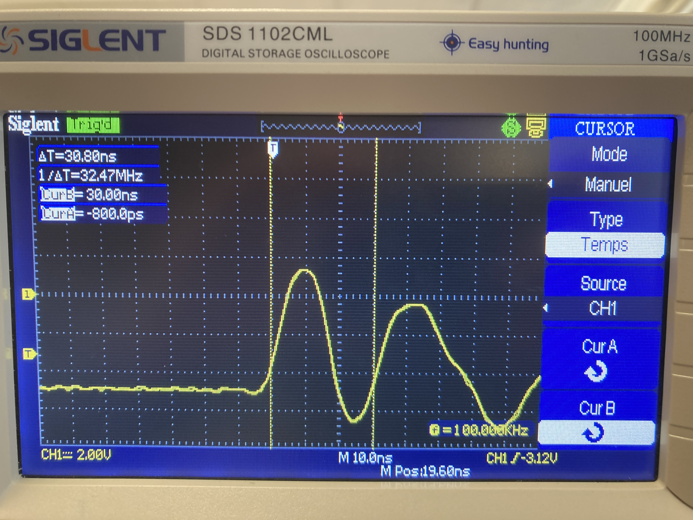
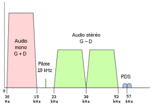

1. Contexte et objectif
L’objectif était de comprendre le comportement de signaux au sein d’un système de transmission et d’être capable d’interpréter des mesures à partir d’outils comme l’oscilloscope ou le GBF.
2. Mon rôle dans la SAÉ
Mon rôle a été de participer aux mesures, d’observer les signaux, d’exploiter les résultats et de relier ces observations aux notions vues en cours. J’ai également dû interpréter les résultats obtenus et comprendre ce qu’ils révélaient sur le système étudié.
3. Compétences et apprentissages critiques mobilisés
- AC12.01 : mesurer et analyser les signaux ;
- AC12.02 : caractériser un système de transmission ;
- AC12.05 : communiquer avec un tiers et expliquer son raisonnement.
Cette SAÉ est directement liée à la compétence Connecter les entreprises et les usagers, car elle repose sur la compréhension des phénomènes de transmission.
4. Tâches réalisées
- Observation de signaux avec un oscilloscope ;
- Utilisation d’un générateur basse fréquence ;
- Étude de la décomposition fréquentielle des signaux ;
- Analyse de courbes et interprétation du comportement du système ;
- Comparaison entre théorie et mesures expérimentales.
5. Traces du projet

Cette capture d’oscilloscope montre le signal étudié lors de la SAÉ. Elle illustre ma capacité à utiliser un instrument de mesure pour analyser un signal et interpréter ses caractéristiques (amplitude, période, fréquence).

Cette image représente la répartition du signal dans le domaine fréquentiel. Elle met en évidence la bande passante et la transmission du signal. Cette trace montre ma capacité à interpréter un signal non seulement dans le temps, mais aussi en fréquence.
6. Analyse de ma progression
Cette SAÉ m’a permis de mieux comprendre le lien entre la théorie et l’expérimentation. J’ai appris à observer un signal non pas seulement comme une courbe, mais comme l’expression d’un comportement physique qu’il faut analyser et expliquer.
7. Difficultés rencontrées
J’ai rencontré des difficultés dans l’interprétation de certaines notions, notamment parce que je n’avais pas une base solide en physique au départ. Les notions de fréquence, de phase et de filtrage demandaient de la rigueur.
8. Ce que j’ai mis en place pour les surmonter
J’ai repris plusieurs fois les notions théoriques, comparé les résultats observés avec les supports de cours et cherché à comprendre les phénomènes progressivement. Cette méthode m’a permis de progresser malgré mes difficultés initiales.
9. Autoévaluation
Cette SAÉ a été exigeante, mais elle m’a fait progresser. Elle m’a appris à être plus rigoureux dans la lecture de résultats expérimentaux. Je dois encore renforcer mes bases en télécommunications, mais j’ai gagné en compréhension et en méthode.
10. Réinvestissement possible
Les compétences acquises pourront être réutilisées dans toute activité liée à l’analyse des transmissions, au diagnostic de liens ou à la compréhension du comportement d’un système.